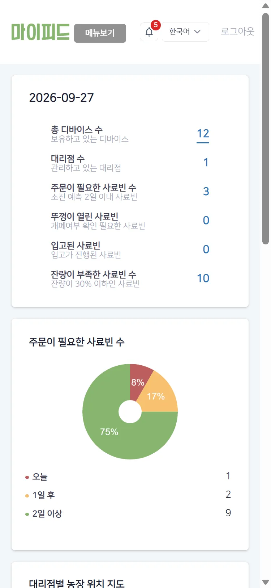
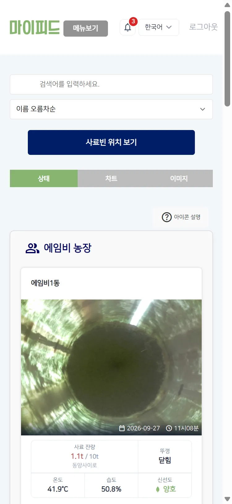
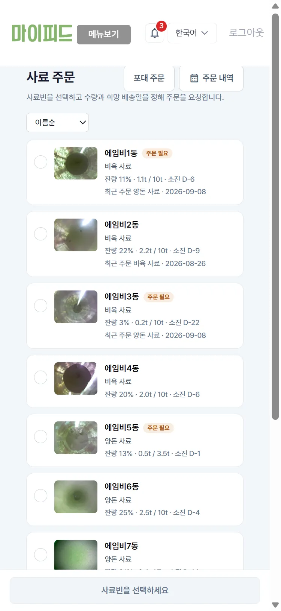
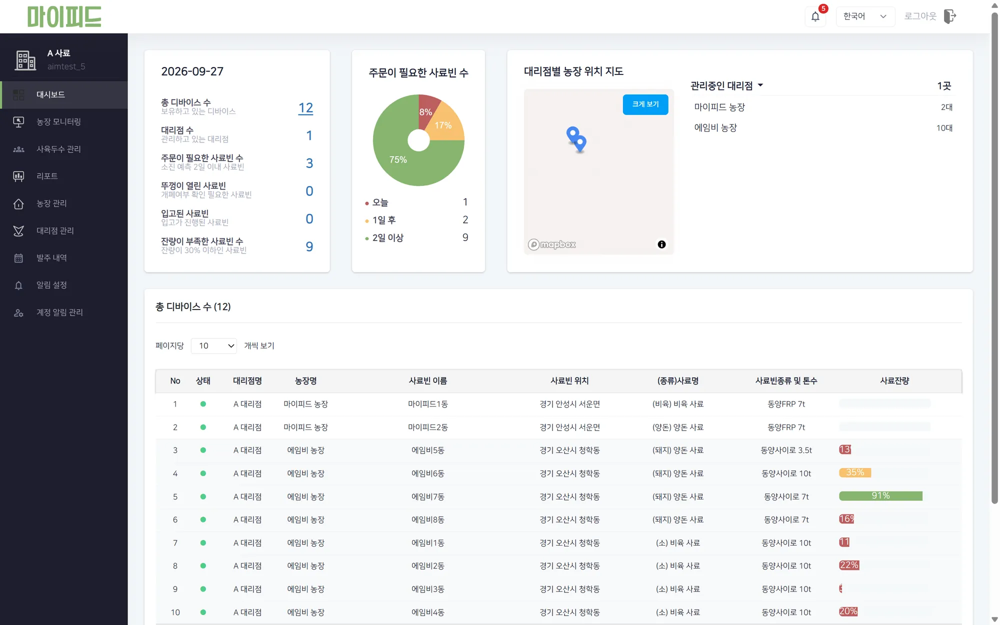
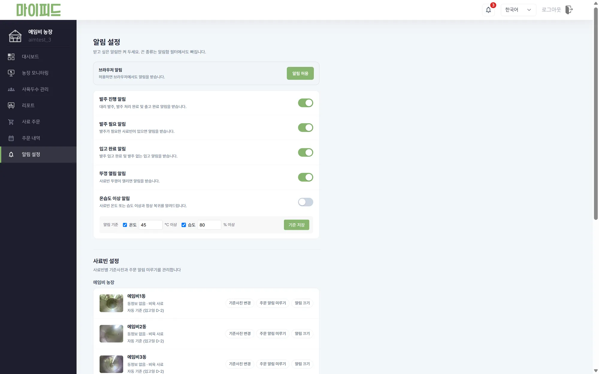
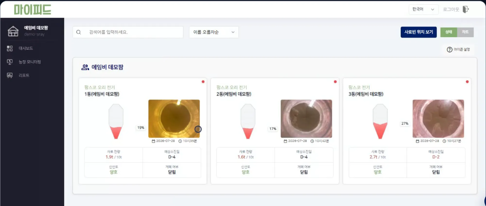
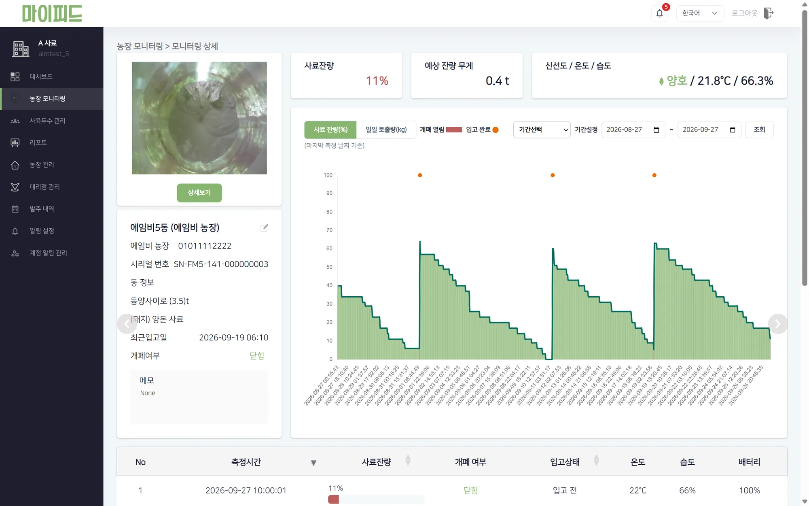
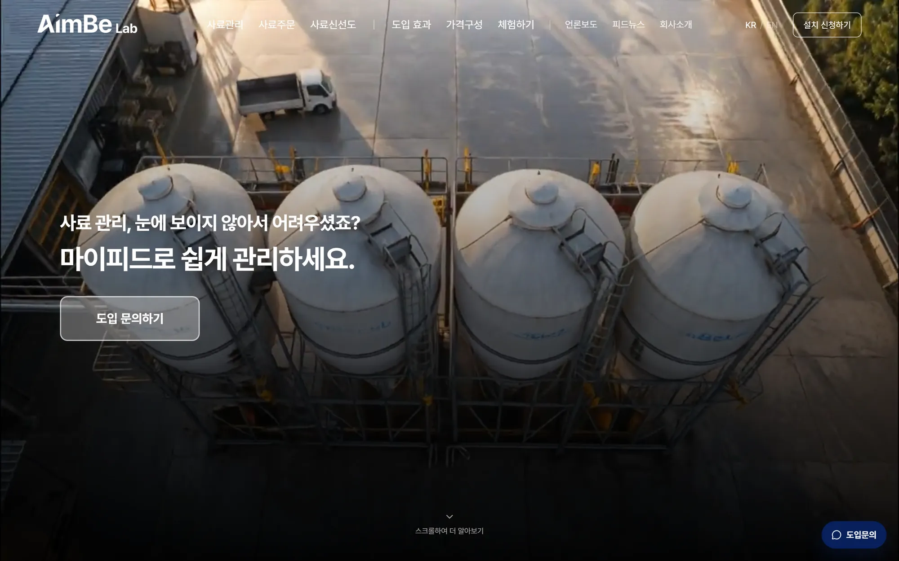
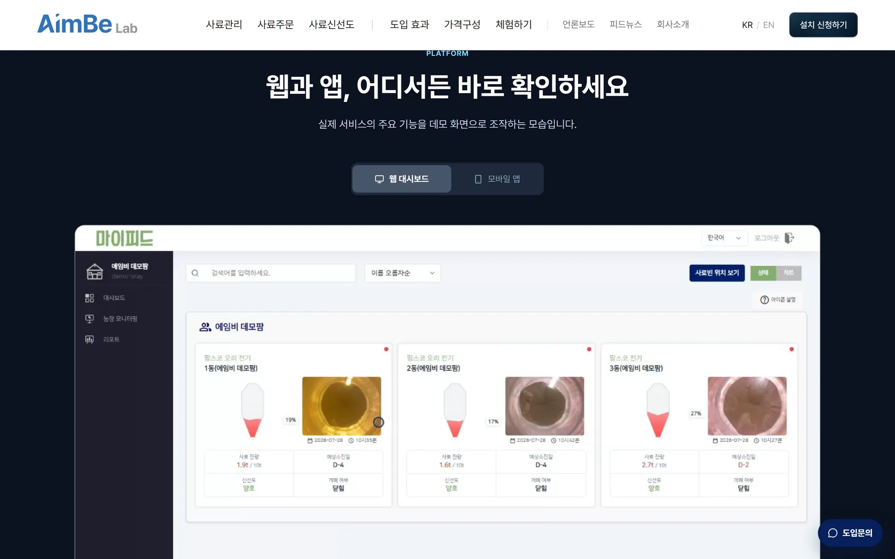

농가가 쓰는 화면을, 가볍고 읽기 쉽게.
마이피드는 2026년 7월 기준 130여 농가가 사용하는 사료 관리 웹서비스입니다. 웹 개발과 운영을 맡아 농장 모니터링 화면, 관리자, 웹 알림을 만들고 고쳐 왔습니다.
- 담당 역할
- 모니터링 화면·관리자·웹 알림 구현, 요청 수와 응답 크기 줄이기, 공통 UI 정리, 언어팩 전환, 마스크 라벨링 기능.
- 함께 일한 사람
- 앱 담당자와 요구사항·화면을 함께 정리했습니다. SAM2 모델 적용은 AI 담당자가 했습니다.
- Stack
- FastAPI · Jinja2 · JavaScript

01 · 화면 개선
문의에서 시작해, 화면에서 끝냅니다.
- 메뉴를 찾기 쉽게 고객 문의에서 메뉴를 찾기 어렵다는 점을 확인하고, 주요 작업으로 가는 경로와 화면 가독성을 조정했습니다.
- 한 곳에서 고치는 공통 UI 여러 페이지에 복제돼 있던 공통 UI를 한 곳에서 수정할 수 있게 정리했습니다.
- 언어별 키·값 문구 화면 문구를 언어별 키·값으로 관리하도록 바꿔, 번역 API 응답을 기다리던 흐름을 개선했습니다.
163px 0px 모바일 가로 넘침 (375px 폭)



375px 폭에서 본 대시보드, 모니터링, 사료 주문 화면.
02 · 요청 줄이기
느린 구간을 먼저 찾고, 그다음에 줄였습니다.
구간별 소요시간 로그로 느린 구간을 찾고, 사진 지연 로딩과 중복 호출 정리로 요청을 줄였습니다. 운영에는 공통 스크립트 제거만 반영됐습니다.
98 50 모니터링 화면 요청 수 (스테이징)

03 · 알림
목적이 다른 두 폴링, 반대 정책.
안 읽은 알림 개수
화면을 안 볼 때는 멈춤폴링 1회당 요청을 6개에서 1개로 줄이고, 숨은 탭에서는 멈추게 했습니다.
푸시가 끊겼을 때를 대비한 조회
숨은 탭에서도 유지특정 브라우저에서 알림이 표시되지 않는 현상을 다른 브라우저와 비교하며 범위를 좁혔고, 이 조회는 계속 돌도록 두었습니다.
6 1 알림 폴링 1회당 요청 (운영)

04 · AI 결과 화면
AI가 낸 결과를, 사람이 판단할 수 있게.
- 보조 시각화 잔량 수치만으로는 상태를 판단하기 어렵다는 고객 반응을 바탕으로, 사료빈 내부 형태를 보여 주는 보조 시각화를 개발하고 일부 농장에서 피드백을 받았습니다.
- 마스크 라벨링 기능 분할에 실패한 이미지를 다시 쓸 수 있도록 마스크 라벨링 기능을 만들고 데이터를 제공했습니다.
- SAM2 교체 제안 SAM2 교체를 조사해 제안했습니다. 모델 적용은 AI 담당자가 했습니다.


05 · 에임비랩 · 회사 홈페이지
회사 소개 사이트에서, 서비스를 보여 주는 사이트로.
회사 홈페이지를 고객 대상 제품·서비스 소개 중심으로 다시 구성하고, 온라인 도입 문의를 사업팀 알림으로 연결했습니다.
- 회사 소개에서 서비스 소개로 회사 연혁·수상 같은 회사 소개 위주의 여러 페이지를, 마이피드 기능과 도입 문의 중심의 한 페이지로 바꿨습니다.
- 사업팀에 바로 닿는 문의 온라인 도입 문의가 사업팀 알림으로 전달되게 연결했습니다. 이렇게 마련한 문의 접점은 사료회사와의 거래 성사에 기여했습니다.
기획 · 디자인 · 웹 구현 · 문의 알림 연결 · Next.js · TypeScript · 사이트 열기


수치와 범위에 대해
- 요청 수·응답 크기·조회 횟수는 변경 커밋에서 확인한 값입니다. 모든 사용자 환경의 체감 속도를 잰 값은 아닙니다.
- 보조 시각화는 일부 농장에 시범 적용한 단계입니다. 시각화가 잔량 추정의 정확도를 높이지는 않습니다.
- 사내 서비스라 공개 링크는 없습니다.
- 화면은 시험용 계정으로 찍었고, 실제 농가 정보는 담지 않았습니다.